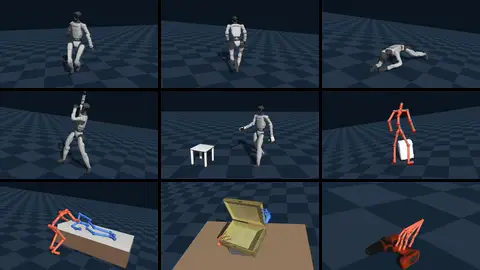

Motion Datasets¶
Eden reads motion libraries (human motion capture, robot retargets, hand-object recordings) through dataset loaders that all produce the same in-memory format. This page lists the loaders that ship, says where each one expects its data and what you must obtain yourself, documents the motion fields they fill, the offline modifiers you can stack on top, and how to write a loader for a new library. How a loaded dataset drives a training environment is in Motion tracking.

Loading a dataset¶
Every loader is a DatasetBase subclass, constructed from its options and a device. The
LAFAN1 replay recipe (examples/recipes/datasets/lafan1.py):
import genesis as gs
import eden as en
from eden.datasets.lafan1_dataset import LAFAN1RetargetedG1Dataset
en.init(backend=gs.gpu)
dataset = LAFAN1RetargetedG1Dataset(
options=LAFAN1RetargetedG1Dataset.configure(
raw_data_path=data_path, # None downloads the dataset from HuggingFace
target_framerate=50.0,
),
device=gs.device,
)
robot_seq = dataset.motion_sequences["g1"] # a BatchMotionSequence
robot_seq.base_pos_w[0, 0] # clip 0, frame 0
robot_seq.buffer_length # frames per clip
dataset.metadata["all_motion_files"] # source file per clip
dataset.motion_sequences maps each motion sequence key (one per actor) to a BatchMotionSequence holding every
clip; len(dataset) is the number of clips. In a task you never construct the dataset yourself: you pass
SomeDataset.configure(...) as a MotionTerm's dataset_options (see
Motion tracking). Each loader under examples/recipes/datasets/
replays one library on a robot in the viewer.
Shipped loaders¶
All of these are importable from eden.datasets and registered in DATASET_REGISTRY under the snake-case key shown.
| loader | registry key | sequence keys | content | data source |
|---|---|---|---|---|
AMASSRetargetedG1Dataset |
amass_retargeted_g1_dataset |
g1 |
AMASS retargeted to a 29-DOF G1, IsaacLab AMP .npz with link poses included |
HuggingFace ember-lab-berkeley/AMASS_Retargeted_for_G1, auto-download |
LAFAN1RetargetedG1Dataset |
lafan1_retargeted_g1_dataset |
g1 |
Ubisoft LAFAN1 retargeted to G1, CSV (30 fps) | HuggingFace, auto-download (g1/ only) |
SEEDRetargetedG1Dataset |
seed_retargeted_g1_dataset |
g1 |
BONES Studio SEED, G1 CSV split (120 fps) | HuggingFace bones-studio/seed, gated |
PHUMADataset |
phuma_dataset |
g1 |
PHUMA physically grounded humanoid motion, G1 split | HuggingFace DAVIAN-Robotics/PHUMA, auto-download |
OMOMOHolosomaDataset |
omomo_holosoma_dataset |
human, object |
OMOMO processed by the Holosoma pipeline: root pose, 52 SMPL-H joint positions, object pose (30 fps) | HuggingFace, auto-download |
ArcticDataset |
arctic_dataset |
object, left_hand, right_hand |
ARCTIC bimanual manipulation: two MANO hands (21 keypoints each) and a 1-DOF articulated object | HuggingFace, auto-download |
HHIAssistDataset |
hhi_assist_dataset |
caregiver, recipient |
HHI-Assist paired BVH of a caregiver and a care recipient (link poses only) | HuggingFace, auto-download |
DexYCBDataset |
dex_ycb_dataset |
hand, object |
DexYCB single-hand grasps of YCB objects (30 fps) | manual download, gated |
TacoDataset |
taco_dataset |
right_hand, object_right, left_hand, object_left |
TACO bimanual tool use (30 fps) | manual download + MANO |
OakInk2Dataset |
oak_ink2_dataset |
as TACO | OakInk2 bimanual manipulation, one clip per program stage (120 fps) | manual download + MANO |
Hot3dDataset |
hot3d_dataset |
as TACO | HOT3D egocentric recordings cut into hand-object segments (30 fps) | manual download + MANO |
WeaveG1InspireHOIDataset |
weave_g1_inspire_hoi_dataset |
robot, left_hand, right_hand, object |
Weave reference clips: a G1 with two Inspire hands moving an OMOMO object | HuggingFace, auto-download |
Three more loaders live with the task that uses them: BvhCsvG1Dataset (eden/tasks/beyondmimic/dataset.py, G1
CSV in BeyondMimic's layout), DexterHandDataset (eden/tasks/contrack/dataset.py, ConTrack xArm7 + XHand clips)
and FlashDexRetargetDataset (eden/tasks/flashdexretarget/dataset.py, the motion.pt that
eden retarget flashdex writes).
The datasets' own licences and citations are in eden/datasets/README.md. Check each licence before using a
library or anything trained on it.
Getting the data¶
Automatic download¶
With raw_data_path=None, a loader that names a HuggingFace repo downloads it into the HuggingFace cache on first
use and reads it from there. Some repos hold more than the loader reads, so a loader may fetch only part of the repo
(_hf_allow_patterns), unpack an archive in place (_post_download_process), and read a subdirectory
(_hf_data_subdir):
- LAFAN1 fetches and reads only the
g1/CSVs; the repo also holdsh1/andh1_2/retargets with other DOF counts. - SEED fetches only
g1.tar.gzand unpacks it tog1/csv/. The repo is gated: request access on its HuggingFace page and runhuggingface-cli loginfirst. - PHUMA downloads one
data.zip, unzips it, and readsdata/g1. - Weave downloads only the files of the
split("train"or"test", default"test") andobjectsyou ask for.
A finished unpack is marked with a .eden_extracted file inside the unpacked directory (g1/ for SEED, data/ for
PHUMA), so an interrupted unpack is redone on the next run; delete that directory to force it. An upstream revision
bump downloads and unpacks into a fresh snapshot directory and leaves the old one behind. Set raw_data_path to a
directory you manage if you want a stable location. Where downloads go in general is covered in
Assets.
An explicit raw_data_path¶
An explicit raw_data_path is used exactly as given and must already exist. A missing path raises (listing the
sibling directories, so a typo is visible) rather than downloading. Because the download stages only run on the
download path, an explicit path must point at what the narrowing would have produced: for LAFAN1 the g1/
directory itself, since mixing robots' CSVs fails with a shape mismatch.
SEED is the one exception: its raw_data_path may be the directory holding g1.tar.gz (it extracts it there, so
that directory must be writable), the extracted g1/, or g1/csv/. For a read-only copy, point at g1/csv.
Licence-gated data you must obtain yourself¶
Eden never ships the SMPL, SMPL-H, SMPL-X or MANO model files, raw AMASS data, or the gated releases. You need:
| what | needed by | where to get it | where the loader expects it |
|---|---|---|---|
| DexYCB | DexYCBDataset |
dex-ycb.github.io (Google Drive consent form) | raw_data_path: the extracted root holding <YYYYMMDD-subject-NN>/<sequence>/; calibration_dir: its calibration/ directory |
| TACO | TacoDataset |
github.com/Satorinal/TACO | raw_data_path holding Hand_Poses/, Object_Poses/, object_models_released/ |
| OakInk2 | OakInk2Dataset |
oakink.net/v2 | raw_data_path holding anno_preview/, program/program_info/, object_repair/align_ds/ |
| HOT3D | Hot3dDataset |
HOT3D | raw_data_path holding dataset/<recording>/, _assets/assets/ |
| MANO models | TACO, OakInk2, HOT3D always; DexYCB with body_model_params=True |
mano.is.tue.mpg.de, Models & Code (mano_v1_2.zip) |
body_model_dir: its models/ directory (MANO_RIGHT.pkl, MANO_LEFT.pkl) |
| SEED access | SEEDRetargetedG1Dataset |
request access on HuggingFace | huggingface-cli login, then auto-download |
The MANO, SMPL and SMPL-H .pkl files pickle chumpy arrays. Eden reads them without chumpy
(eden.utils.chumpy_pickle), so they need no extra package; a .npz next to the .pkl is read instead when
present.
Dataset notes¶
AMASS. The clips are already retargeted to the G1, with link poses precomputed. This is the retargeted split
only; the raw AMASS SMPL clips (for eden retarget soma)
come from amass.is.tue.mpg.de.
SEED. The CSV root rotation columns are Euler angles in degrees composed in intrinsic ZYX order (the Maya
export convention); translation is in centimetres and joints in degrees. The loader handles all three. At about
142k clips, use the file filters and GroundFirstFrame(chunk_size=...) to keep memory bounded.
ARCTIC. The object's one DOF is rotation, and its links are bottom and top; each hand's links are the 21
MANO keypoints (eden.datasets.constants.MANO_KEYPOINTS_NAME). This loader does not trim clips, so
drop_first_n_frames / drop_last_n_frames raise; use the TrimFrames modifier.
DexYCB. calibration_dir is required: each clip's master-camera extrinsic is applied so poses land in DexYCB's
AprilTag world frame (z-up, origin on the table tag), and a missing or nonexistent calibration_dir raises
FileNotFoundError. The hand's base is the labelled MANO wrist keypoint (MANO's transl is a shape-dependent
offset of about 9 cm away from it), and its links are the 21 labelled keypoints. Only the grasped object
(meta.yml::ycb_grasp_ind) is kept. Leading frames without a MANO annotation are trimmed, and a clip whose
unannotated frames are not all at its start is skipped with a warning. Per-clip metadata: objects (YCB folder
name) and sides. Further options: ground_initial_pose (default True), apply_mesh_correction (default True;
set False when rendering against a non-Eden YCB asset, and provide models_dir), and retargeted_label, which
also loads a retargeted_<label>.npz written next to each clip by
examples/recipes/retargeting/dex_retargeter/dex_ycb_position_retargeting.py as a third key, robot.
from eden.datasets import DexYCBDataset
ds = DexYCBDataset(
options=DexYCBDataset.configure(
raw_data_path="/data/dex_ycb",
calibration_dir="/data/dex_ycb/calibration",
target_framerate=30.0,
),
device="cuda",
)
TACO, OakInk2, HOT3D (shared base HandObjectDatasetBase). Each clip holds <side>_hand (the MANO wrist as
base, the 21 MANO keypoints as links) and object_<side> (the object that hand holds) for the hands in sides
("both", "right" or "left"). A clip where a loaded hand holds nothing, or whose reader rejects it, is left out
and named in metadata["skipped"]. Per-clip metadata: clip_names, recordings, objects_<side>;
object_mesh(obj_id) and recording_object_poses(recording) read meshes and every object's poses from the
release. World frames follow CHORD's conventions (z-up). Pass the release's rate as target_framerate (the
class attribute source_framerate) to keep the clips unretimed. Release-specific options: OakInk2's contact
(default 0.01 m), and HOT3D's segmentation settings tip_contact, link_contact, gap_frames, min_frames,
pad_frames and modes (default ("B",): both hands on one object). File filters match each clip's
<unit>/<clip name> path.
from eden.datasets import TacoDataset
ds = TacoDataset(
options=TacoDataset.configure(
raw_data_path="/data/taco", body_model_dir="/data/mano_v1_2/models", target_framerate=30.0
),
device="cpu",
)
print(ds.metadata["clip_names"][:3], ds.metadata["objects_right"][:3])
HHI-Assist. Paired caregiver and recipient BVH files (120 Hz), parsed by eden.datasets.utils.bvh.parse_bvh.
Both actors are link-only (no DOFs), so they are tracked with link and base terms.
OMOMO (Holosoma). The human is link-only: 52 SMPL-H joint positions in SMPLH_KEYPOINTS_NAME order. The object
is a base pose only. metadata["human_height"] holds each subject's height, which
eden retarget omniretarget uses to scale.
Common options¶
Every loader accepts these (DatasetOptions); each loader's own options are listed in its docstring and its
API entry.
| option | default | effect |
|---|---|---|
raw_data_path |
None |
source data; None downloads when the loader has a repo |
processed_data_path |
None |
cache file; None keeps nothing on disk, except for a loader that derives its own default path (BeyondMimic's BvhCsvG1Dataset) (see the cache) |
target_framerate |
50.0 |
every clip is resampled to this rate at load. Match the env's control rate. |
drop_first_n_frames, drop_last_n_frames |
0 |
trim each raw clip at read time. A loader that cannot (ARCTIC) refuses a non-zero value; use TrimFrames. |
include_pattern, exclude_pattern |
None |
regex (re.search) on each file's basename |
include_list_file, exclude_list_file |
None |
YAML/JSON list of files to keep/drop: a flat list, a list of {file: ...} dicts (ProtoMotions' amass_*_train.yaml shape), or either under a motions: key. Matched on basename without extension, so CMU/45/45_01_stageii.motion matches 45_01_stageii.npz. |
modifiers |
() |
offline transforms applied after load (Modifiers) |
recalculate_velocities |
True |
re-estimate velocities by finite differences of the resampled positions instead of interpolating source velocities |
strict_cache_identity |
True |
refuse a cache whose record omits a setting this loader tracks; False accepts it with a warning |
body_model_params |
False |
also load body-model pose and shape (below) |
body_model_dir |
None |
directory of the licence-gated model files |
Filters run before preparation, so excluded files are never read, and again on every cache load, so one cached full library can serve several subsets.
The motion fields¶
A loader fills a MotionSequence per clip (fields [num_frames, ...]) and batches them into a
BatchMotionSequence per key (each field a concatenated tensor indexed [clip, frame, ...]). Both live in
eden.utils.motion_reference.motion_data. Only framerate is required; fill what your source has.
| field | per-frame shape | notes |
|---|---|---|
framerate, buffer_length |
scalar | clip rate (Hz) and frame count |
dofs_pos, dofs_vel |
(D,) |
joint positions / velocities in the loader's motion_dofs_name order |
base_pos_w, base_quat_w |
(3,), (4,) |
floating-base pose; quaternion wxyz |
base_lin_vel_w, base_ang_vel_w |
(3,) |
estimated from the poses when not given |
links_pos_w, links_quat_w |
(L, 3), (L, 4) |
tracked-link poses, rows in motion_links_name order; computed by forward kinematics when the source has only base and joints |
links_lin_vel_w, links_ang_vel_w |
(L, 3) |
estimated when not given |
links_pos_b, links_quat_b, links_lin_vel_b, links_ang_vel_b |
(L, ...) |
the link fields in the base frame, derived from the world ones. A large library may skip all four (derive_body_frame=False), which halves per-link memory; no tracking term reads them, but base-frame link distances do and refuse such a dataset. |
contact_points_w, contact_points_valid |
(L, P, 3), (L, P) |
demonstrated contact points per (link, partner link), opt-in; contact_points_valid alone is a per-link binary contact flag |
contact_label |
(L,) int8 |
+1 must touch, -1 must not touch, 0 no label, opt-in |
body_pose_quat, body_shape, body_model |
(J, 4), (B,), str |
body-model parameters, opt-in (below) |
Quaternions are wxyz everywhere. Loaders whose source is xyzw (LAFAN1, DexYCB, PHUMA, HHI-Assist BVH, OMOMO's
object) convert on read with eden.utils.geom.xyzw_to_wxyz, and MotionSequence renormalizes every quaternion
field when it is constructed. Contact fields and labels are resampled nearest-neighbour, never blended.
A BatchMotionSequence also carries is_free_floating (default True) and entity_kind (advisory); see
several actors.
Body-model parameters¶
With body_model_params=True (off by default), DexYCB, TACO, OakInk2 and HOT3D also store the MANO pose and shape of
each hand: body_pose_quat (the local rotation of every joint below the root, wxyz, relative to the flat hand),
body_shape (the betas) and body_model ("mano_right" / "mano_left"). The root is the sequence's base:
base_pos_w is the root joint, not MANO's transl. Any other loader refuses the flag. With it off nothing extra is
read, stored or cached, and no simulation buffer ever holds these fields. A cache prepared without them is refused
when the flag asks for them.
eden.datasets.utils.body_model turns them back into geometry:
from eden.datasets.utils.body_model import body_model_forward
hand = ds.motion_sequences["right_hand"]
joints, vertices = body_model_forward(
hand.body_model[0], # e.g. "mano_right"
"/data/mano_v1_2/models",
hand.base_pos_w[0], hand.base_quat_w[0],
hand.body_pose_quat[0], hand.body_shape[0],
)
BODY_MODELS names every supported model: mano_right, mano_left, and smpl_*, smplh_*, smplx_* for
neutral, male and female. A model file is found under its BODY_MODELS spelling (SMPLH_MALE.pkl), the
official download's (SMPLH_male.pkl), or AMASS's <gender>/model.npz. The models run on SkinnedBodyModel, a
numpy linear-blend-skinning rig, so the smplx package is not needed.
Modifiers¶
Modifiers are offline transforms applied to the loaded clips after the cache is loaded or prepared, in the order listed. They are not stored in the cache, so changing them needs no rebuild.
from eden.datasets.modifiers import GroundFirstFrame, SmoothStartTransition
from eden.options.robots.unitree_g1 import G1_IK_PROFILE
dataset_options = LAFAN1RetargetedG1Dataset.configure(
raw_data_path="/data/lafan1/g1",
modifiers=[
GroundFirstFrame.configure(robot_options=en.robots.G1Dofs29()),
SmoothStartTransition.configure(
ik_profile=G1_IK_PROFILE,
motion_links_name_per_key=dict(LAFAN1RetargetedG1Dataset.motion_links_name),
),
],
)
| modifier | registry key | does |
|---|---|---|
Translate |
translate |
add offset to base_pos_w and links_pos_w |
Rotate |
rotate |
rotate every world-frame field by angle_deg about axis through the world origin. Order with Translate matters. |
MirrorLR |
mirror_lr |
mirror across the plane normal to axis (default 1, y) and relabel sides with dofs_swap, dofs_sign_flip, links_swap (indices in the original order) |
SpeedScale |
speed_scale |
play speed times faster by resampling, keeping the framerate; velocities are scaled |
TrimFrames |
trim_frames |
drop trim_first / trim_last frames |
Jitter |
jitter |
add Gaussian (std) or uniform (low, high) noise to fields. Prefer Rotate for orientations: noise breaks unit quaternions. |
GroundFirstFrame |
ground_first_frame |
lift each clip so frame 0's robot AABB sits at or above z = 0 (+ safety_margin_m), by forward kinematics of robot_options. One env per clip unless chunk_size is set. |
SmoothStartTransition |
smooth_start_transition |
prepend a stand-still, an IK-synthesized step and a blend into frame 0, so a reset from the default pose is not a teleport. Needs ik_profile (G1_IK_PROFILE for the G1). |
TCRSTerrainAdapt |
tcrs_terrain_adapt |
adapt flat-ground clips to a terrain; see TCRS terrain adaptation |
Compose |
compose |
run a nested list of modifiers as one, optionally scoped to keys |
Rules that apply to all of them:
- Scope with
motion_sequence_keys.None(the default) applies a modifier to every key; an empty tuple applies it to none. A key that is not in the dataset raises. - Robot-only modifiers need one key.
GroundFirstFrameandSmoothStartTransitiondrive one robot; on a dataset with a robot and an object, setmotion_sequence_keys=("robot_key",), and shift the object to match yourself, or the two drift apart. - Keep keys the same length.
TrimFramesandSpeedScalechange clip lengths. Applied to only some keys of a multi-key dataset, they leave the keys with different lengths, which raises after the stack runs. - Body-model fields.
MirrorLR,SmoothStartTransitionandTCRSTerrainAdaptcannot keepbody_pose_quatconsistent and refuse a sequence that carries it. - Not idempotent. Each modifier mutates the clips in place and runs once per load. Reload the dataset to rerun the stack.
Writing a loader¶
A loader declares its actors and their names as class attributes and implements prepare(). LAFAN1's
(eden/datasets/lafan1_dataset.py, lightly trimmed) is a complete example:
from typing import Any, ClassVar
import numpy as np
import eden as en
from eden.datasets.base import DATASET_REGISTRY, DatasetBase
from eden.options.robots.unitree_g1 import G1_DOFS29_NAME, G1_DOFS29_TRACKED_LINKS_NAME
from eden.utils.geom import xyzw_to_wxyz
from eden.utils.motion_reference.motion_data import BatchMotionSequence, MotionSequence
@DATASET_REGISTRY.register()
class LAFAN1RetargetedG1Dataset(DatasetBase):
_applies_frame_window: ClassVar[bool] = True
registry: str = "<hf-namespace>" # the HuggingFace repo <registry>/<dataset>
dataset: str = "LAFAN1_Retargeting_Dataset"
_hf_allow_patterns: ClassVar[tuple[str, ...]] = ("g1/*", "LICENSE", "README.md")
_hf_data_subdir: ClassVar[str] = "g1"
file_extension: ClassVar[str] = ".csv"
motion_sequence_keys: ClassVar[tuple[str, ...]] = ("g1",)
motion_dofs_name: ClassVar[dict[str, list[str]]] = {"g1": G1_DOFS29_NAME}
motion_links_name: ClassVar[dict[str, list[str]]] = {"g1": G1_DOFS29_TRACKED_LINKS_NAME}
def prepare(self) -> tuple[dict[str, BatchMotionSequence], dict[str, Any]]:
# The CSVs carry base + DOFs only, so links come from forward kinematics of this robot.
return self._prepare_single_key(
self._read_single_sequence,
desc="LAFAN1: reading raw csv",
robot=en.robots.G1Dofs29(dofs_name=self.motion_dofs_name["g1"]),
)
def _read_single_sequence(self, file_path: str) -> MotionSequence:
motion = np.loadtxt(file_path, delimiter=",")[self._frame_window()]
return self._pack_motion_sequence(
framerate=30.0,
base_pos_w=motion[:, :3],
base_quat_w=xyzw_to_wxyz(motion[:, 3:7]),
dofs_pos=motion[:, 7:],
)
What each piece is for:
motion_sequence_keys,motion_dofs_name,motion_links_nameare required; the class fails to define without them. Every key needs an entry in both name maps ([]when the actor has none).file_extensionis globbed recursively underraw_data_path.prepare()readsself.all_motion_files, already filtered._pack_motion_sequence(framerate, base_pos_w, base_quat_w, ...)builds one clip: it resamples totarget_framerate, estimates missing velocities, derives the base-frame link fields (unlessderive_body_frame=False) and refuses a clip under 2 frames._prepare_single_key(read_fn, desc, robot=...)covers the one-actor, one-file-per-clip case: parallel reads, batching, and, withrobot, forward kinematics for the link fields. Multi-actor loaders call_parallel_read_motion_filesandBatchMotionSequence.from_motion_sequencesthemselves and return({key: batch, ...}, metadata); every key must end up with the same clip lengths.registry/datasetname a HuggingFace dataset repo for the automatic download;_hf_allow_patterns,_post_download_processand_hf_data_subdirnarrow it. A subclass for another robot replaces the pattern tuple rather than extending it._applies_frame_window = Truedeclares that the reader slices withself._frame_window(); without it, a non-zerodrop_first_n_frames/drop_last_n_framesraises instead of being silently ignored._cache_identity_fieldslists the loader's own options that change the prepared data. They are recorded in the cache and checked on load; an option missing from the list lets a stale cache survive a setting change._PER_CLIP_METADATA_KEYSlists metadata lists with one entry per clip, so they stay aligned when clips are filtered or split across ranks (required forenv_motion_groups)._supports_body_model_params = Truefor a loader that can fill the body-model fields.
See also¶
- Motion tracking: how a dataset feeds the motion manager, and the cache.
- Retargeting: turning human motion into robot motion these loaders can read.
- Pose estimation: SMPL-X motion from video.
- API: datasets, motion reference.